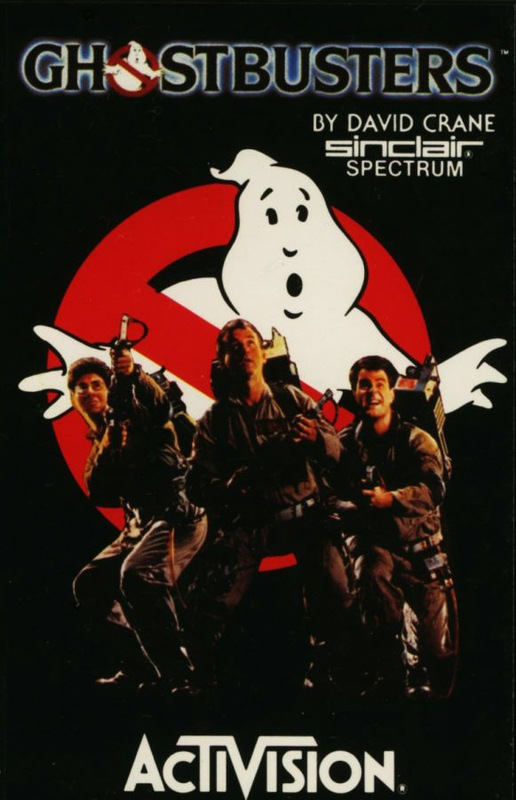
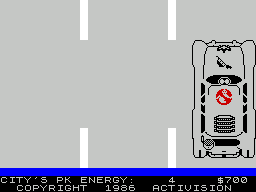

Ghostbusters


{kind=link}

| Publisher: | Activision |
| Price: | £9.99 |
| Year: | 1984 |
| Source: | CRASH, Issue 13 |
It's doubtful that anyone can have missed the film Ghostbusters over Christmas, so the background to this game from Activision needs little explanation. The Spectrum release of Ghostbusters has been completely overshadowed by the CBM 64 release which was timed to be on sale before the film even opened in December. And most of the fuss over the game has been occasioned by the CBM 64 version with its super soundtrack. The Spectrum version also uses the Ghostbusters theme, but somewhat less successfully of course.

Ghostbusters is more of a strategy game than an arcade game, based on the idea of running a Ghostbusters Franchise to clean up the city of paranormal manifestations. To begin your franchise you need to enter your name and account number if you have one (being carried over from a previous game). If you haven't got an account number the computer will allocate you a starting sum of £10,000. Next you must select one of four vehicles which have various capacities for carrying ghostbusting equipment and speeds, and of course they each cost more than the last. Having purchased a vehicle, the next step is to equip it. Monitoring equipment includes the PK Energy Detector, Image Intensifier and Marshmallow Sensor. Capture Equipment includes Ghost Bait, Ghost Traps and the Ghost Vacuum. Storage Equipment includes the Portable Laser Confinement System. All these items have their own prices, and the starting sum will not allow you buy lots of every thing, so game experience is valuable in making these decisions, and the equipment has important functions. The PK energy detector warns of approaching Slimers; image intensifiers make slimers easier to see when trying to catch them; the marshmallow sensor warns of the dread Marshmallow Man; ghost vacuums suck up roamers; ghost trap traps catch and store slimers once the bait has attracted them; and the portable laser confinement system holds up to ten slimers in the vehicle, thus saving you trips back to GHQ.
The game proper begins with a map of central New York with Zuul's Temple marked in the centre and GHQ at the bottom. Red flashing buildings indicate the presence of ghosts. The object is to cleanse the buildings and suck up roamers which are trying to make their way to the Temple of Zuul. From the map, a route may be selected and then the screen cuts to an overhead view of your vehicle on the road. Roamers can be sucked up by pressing the vacuum button at the right moment. On arriving at the building, the screen cuts again to a side view of the building, and you can see your ghostbusters at its base. Traps must be laid and then the two busters turn on their negative ioniser packs and aim the beams to trap the ghost between, without letting the beams cross over — very important that. The more ghosts you capture the higher your credit rating goes. The game ends when the Gatekeeper and Keymaster join forces at the Temple of Zuul in which case you will not have earned more money that you started with, or you do have sufficient credit but fail to sneak two ghostbusters into the entrance of Zuul, or the same thing but you do succeed in getting them in.
CRITICISM
'This game was released to coincide with the feature film. Seeing the earlier CBM 64 version before it an easy comparison can be made. Obviously the CBM has got better looking graphics and sound than the Spectrum. I take the pleasure to say that the graphics are no different on the Spectrum version whatsoever, although the sound track on the Commodore version really did give it a nice playable rhythm as continued throughout the game. The Spectrum version does have sound and the Ghostbusters theme at the beginning of the game, but this is all really. Oddly enough because there is no sound or, should I say, no synthesised continuous tune the game definitely seems to lack something. This does go to show that the game itself lacks distinctly in content. More often than not there seems to be little to do. While trying to catch a slimer with a trap I found that a slimer was too lively to be able to be caught and also it tended to wander too much to one side of the screen and not to use the entire playing area. Several people that I know were eagerly awaiting the arrival of the Ghostbusters Spectrum version. I have the sad news to inform them that this game is not up to scratch and won't have any real lasting appeal, and at the price is a total rip-off.'
'After hearing a lot about the Ghostbusters film I couldn't wait to get my hands on a Spectrum version. After seeing the £10 price tag I was expecting something as good as the film, unfortunately this was not the case. On the whole the game tended to lack atmosphere, this was possibly due to the distinct lack of sound. The game was generally unexciting and the tasks rather uninspiring. After managing to bust a slimer I was unable to return to the street scene map, my efforts still proved fruitless after several attempts. On the whole I felt that the game was bad value for money and lacked addictive qualities. The graphics were acceptable but I've seen much better for much less. Basically it just left me cold.'
'Ghostbusters for the Spectrum is bound to be compared with the CBM 64 version which is a bit unfair because the thing that made the Commodore version was the sound, which as we all know cannot be reproduced well on the Spectrum, though what is there isn't bad for a one channel speaker. The graphics are quite good but everything is just a trifle slow for me. Ghostbusters isn't that addictive because it's slow starting up, also I don't know whether our version was bugged but when you caught a slimer, the only thing you could do was start the game over from the beginning again. Overall Ghostbusters has been a disappointment.'
COMMENTS
| Control keys: | Q/A up/down, O/P left/right and Z to fire |
| Joystick: | Kempston, Sinclair 2, Protek, AGF |
| Keyboard play: | Fairly responsive |
| Use of colour: | Well used on the map screen especially |
| Graphics: | Above average to good |
| Sound: | Good tune, though a little flat, otherwise not much during play |
| Skill levels: | 1 |
| Lives: | N/A |
| General rating: | Average quality but boring and poor value for money. |
| Use of computer: | 78% |
| Graphics: | 72% |
| Playability: | 60% |
| Getting started: | 69% |
| Addictive qualities: | 48% |
| Value for money: | 31% |
| Overall: | 60% |